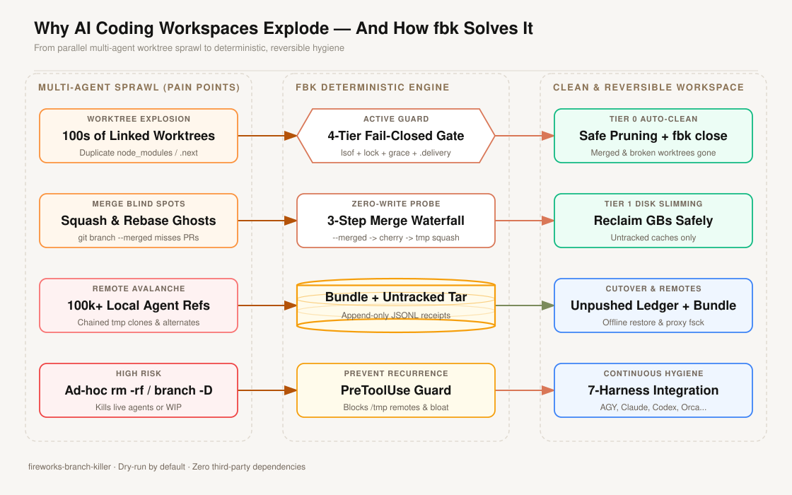
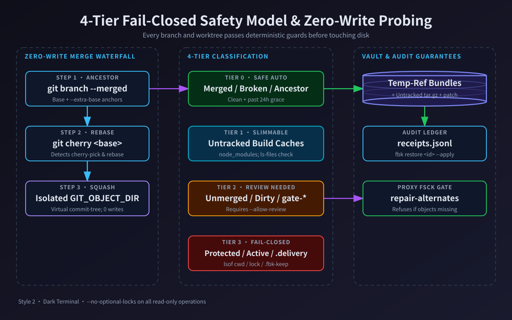
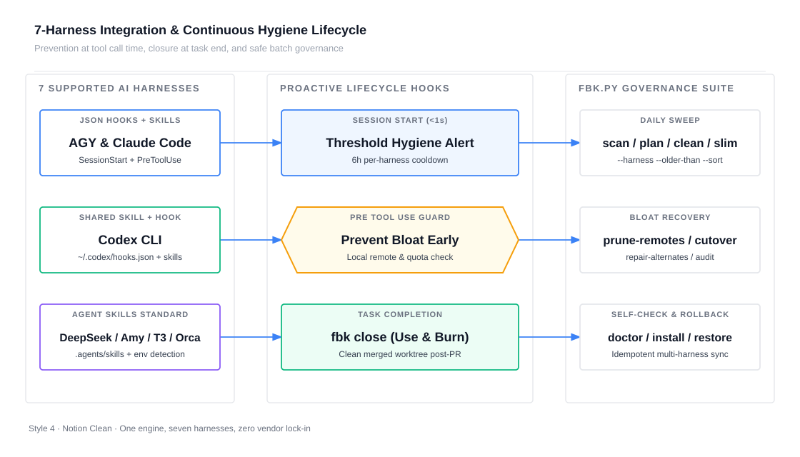

硬链接 st_nlink > 1 采样识别
精准区分 pnpm 硬链接 node_modules（提醒配 pnpm store prune）与独占物理盘大户（如 Rust target/ 与 Next.js .next/cache）。
fbk doctor →
面向 Claude Code、Codex、Antigravity (AGY)、Amp、DeepSeek Harness、Amy、T3 Code 与 Orca 的确定性 Git 分支治理引擎——内置动态自进化 fbk doctor、零写入 Squash/Rebase 合并识别与恢复保险丝。
npx -y skills@1.5.17 add yizhiyanhua-ai/fireworks-branch-killer/skills/fireworks-branch-killer --agent codex claude-code -g -y --copy
fbk doctor：越用越懂你机器的动态自进化省空间引擎。每次体检和清理都会自动沉淀进本机专属 <state_dir>/playbook.md——零污染代码 Git 仓库——随着你的技术栈和项目不断迭代建议。
精准区分 pnpm 硬链接 node_modules（提醒配 pnpm store prune）与独占物理盘大户（如 Rust target/ 与 Next.js .next/cache）。
比如修掉 .gitignore 尾斜杠（node_modules/）后重跑 doctor，旧告警自动消警并归档为已解决项。
每次 slim、clean 或 close --apply 释放的字节与高频复发仓自动回写演进档案，直观定位真凶。
用 fbk doctor --learn "..." --stack js-ts 或直接对 Agent 说一句话记下团队新坑；传 --no-evolve 可纯只读。
装入 Claude Code、Codex、AGY 或 Amp 后，自然语言直接路由到 scripts/fbk.py，彻底告别让 LLM 瞎拼 rm -rf。
| 使用场景 | 对 Agent 直接说人话 | 确定性 CLI 命令 |
|---|---|---|
| 自进化工作区体检 | “用 fbk doctor 体检下工作区，给我省空间建议” | fbk doctor --root . |
| 打开本机活手册 | “打开我的 fbk 动态省空间手册” | fbk doctor --show-playbook |
| 沉淀团队新踩坑 | “把这条经验记进 fbk：删完 pnpm worktree 要跑 store prune” | fbk doctor --root . --learn "Run pnpm store prune" --stack js-ts |
| 保源码、只清闲置缓存 | “用 fbk 把闲置 worktree 里的 node_modules/.next/target 瘦身” | fbk slim --root . --apply |
| PR 合入后用完即焚 | “这个 PR 已 Squash 合入，用 fbk 收尾对应 worktree 和分支” | fbk close --worktree ./wt-feat --apply |
| 批量清理 / 反悔还原 | “用 fbk 预览 Tier 0 清理” / “还原上次误删分支” | fbk clean --root . --tier 0 --apply · fbk restore <id> --apply |
fbk doctor 的 9 大 AI Coding 省空间实战经验。事前阻止每个新建 worktree 复制数 GB 重复依赖，同时由 doctor 自动扫描避坑。
| 技术栈 / 环节 | 根源省空间机制 | 关键踩坑与 fbk 联动 |
|---|---|---|
| Claude Code | worktree.symlinkDirectories |
.gitignore 禁写 node_modules/ 尾斜杠（Git 把软链当文件匹配不上）；fbk slim 使用 follow_symlinks=False 绝不误删软链目标。 |
| JS / TS (pnpm & bun) | virtualStoreType: global · bun CoW |
普通 pnpm 硬链接到全局 store，单删 worktree 回收有限，记得配 pnpm store prune；真正独占盘的是 target/ 和 .next/cache。 |
| Browser E2E / QA | PLAYWRIGHT_BROWSERS_PATH · PUPPETEER_CACHE_DIR |
统一外置 400MB–1.2GB 浏览器二进制，并将 trace 与 video 设为 retain-on-failure 防录屏爆盘。 |
| Python & AI / ML | uv + UV_LINK_MODE=clone · HF_HOME |
保持 UV_CACHE_DIR 与代码同卷以触发 APFS 零拷贝；模型权重放工作区外可省 10–60 GB。 |
| Rust (Tauri / Wasm) | RUSTC_WRAPPER=sccache · CARGO_TARGET_DIR |
消灭每个 worktree 5–20 GB 的 target/ 膨胀；多 Agent 并行建议 sccache + fbk slim 组合。 |
| Go / Mobile / Docker / Git | GOMODCACHE · GRADLE_USER_HOME · cp -cR |
优先 git worktree 而非整仓 git clone，用 docker compose down -v 清匿名测试卷，仓内开启 git maintenance start。 |
所有只读探测强制 --no-optional-locks，虚拟 Squash 探针在隔离临时对象库执行，任何非祖先删除前先打 .bundle 进保险丝。
过 24h 保护期、无活跃 lsof 进程且经三步瀑布验证已合并的 worktree 与分支。
3 层嵌套扫描 Monorepo 闲置缓存，校验无 git ls-files 跟踪文件后定向瘦身。
需显式确认，并在删除前把分支 .bundle、diff 和未跟踪压缩包存入恢复保险丝。
主仓库、受保护分支、活跃进程 cwd、index.lock、.fbk-keep、.delivery 与 24h 新建保护。


| 核心能力对比 | fbk (v1.1.1) | 原生 Git CLI | 模型临场 rm -rf |
|---|---|---|---|
| Squash / Rebase 合并识别 | 零写入三步瀑布（祖先 + git cherry + 隔离虚拟 squash） |
git branch --merged 完全识别不了 |
靠猜，极易误删 |
| 活跃 Agent 与在途保护 | Fail-Closed lsof 进程检测、24h 冷却、.fbk-keep、.delivery |
需逐个手工排查 | 可能删掉另一路 Agent 的工作区 |
| 可逆恢复保险丝 | 单仓聚合 1 份 .bundle + 5 GiB 写前门禁 + 浅克隆保护 |
无（依赖会过期的 reflog） |
永久丢代码 |
缓存瘦身与 pnpm 硬链接 |
fbk doctor 采样 st_nlink > 1 + 3 层安全缓存清理 |
无 | 可能误跟软链或删掉被跟踪的 dist/ |
SessionStart 温和体检提示，PreToolUse 在新增本地 /tmp remote 或超额建 worktree 前主动拦截。

| Harness | Skill 发现目录 | Hooks 与护栏 | 自动识别的 Worktree 命名模式 |
|---|---|---|---|
| Claude Code | .claude/skills/ |
.claude/settings.json |
.claude/worktrees/*, claude-* |
| Codex | .agents/skills/ |
~/.codex/hooks.json + AGENTS.md |
.codex/worktrees/*, codex* |
| Antigravity (AGY) | .agents/skills/ |
.agents/hooks.json |
agy-*, ge\d+-*, .gemini |
| Sourcegraph Amp | .agents/skills/ · ~/.config/agents/skills/ |
AGENTS.md |
Shared .agents/skills/ standard |
| DeepSeek / Amy / T3 / Orca | .agents/skills/ |
hook_adapter.py + ORCA_* |
wt-ds*, .amy/*, .t3/*, .orca/* |
fbk slim --root . --apply（或直接对 Agent 说给闲置缓存瘦身）。它会 3 层嵌套扫描 Monorepo，用 lsof 排查活跃进程、用 git ls-files 确认不含 Git 跟踪文件且跳过软链（follow_symlinks=False），只清 node_modules、.next、target、dist、.venv 而保留源码和分支。pnpm 通过硬链接把 node_modules 链接到全局 store，单删一个 worktree 时只要 store 里还留着引用就不会立刻释放物理盘块。fbk doctor 会采样 st_nlink > 1 自动识别并提醒你配合 pnpm store prune（或启用 virtualStoreType: global），同时聚焦 target/ 和 .next/cache 等独占大户。playbook.md 和 evolution-profile.json 全部存在用户本机状态目录 <state_dir>，绝不写入任何项目仓库；如需严格零写入，传入 --no-evolve 即可。git branch --merged 不同，fbk 采用零写入三步瀑布检测：祖先检查 → git cherry 等价补丁比对 → 在隔离临时 GIT_OBJECT_DIRECTORY 中做虚拟 squash 验证，不会向真实仓库写入任何松散对象。.bundle、diff 和未跟踪文件归档到 Recovery Vault。运行 fbk restore --list 和 fbk restore <receipt_id> --apply 即可一键还原。.agents/skills/ 开放 SKILL.md 标准（Claude Code 同时支持 .claude/skills/）。用 npx skills 装一次，所有工具就能共享同一套确定性安全护栏。v1.1.1 起，fbk 在清理前会先按仓库汇集所有待归档分支与 detached HEAD，每个仓仅通过 git bundle create --stdin 生成 1 份共享多引用 .bundle（杜绝 60–400× 重复打包），写后自动执行 git bundle verify 校验，并默认启用 5 GiB 写前磁盘剩余空间门禁（--min-free-gb）与浅克隆 Fail-Closed 保护。